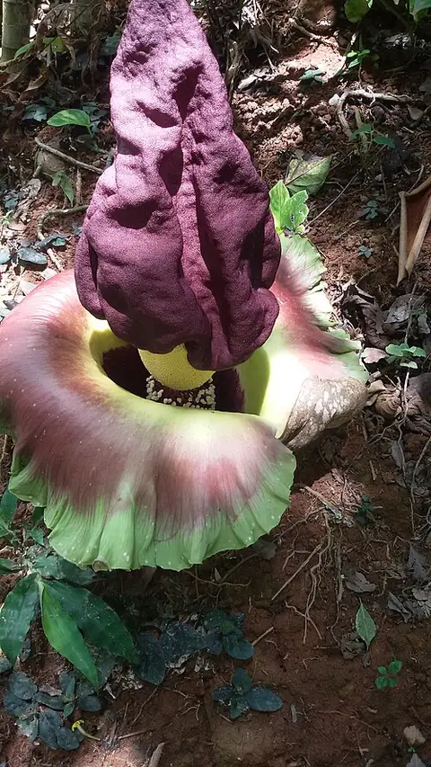

Wild elephant foot yam
Wild elephant foot yam is a root or shoot you can forage from November to March in South India, East, Central forests, Northeast and West coast and Deccan. Single umbrella-like leaf on a mottled stalk. Big flattened tuber underground.

When is wild elephant foot yam in season in India?
Wild elephant foot yam is usually in season November to March. Timing shifts with weather, latitude and altitude.
Where does wild elephant foot yam grow in India?
Wild elephant foot yam grows in Andaman and Nicobar Islands, Andhra Pradesh, Arunachal Pradesh, Assam, Bihar, Chhattisgarh, Dadra and Nagar Haveli and Daman and Diu, Goa, Gujarat, Jharkhand, Karnataka, Kerala, Lakshadweep, Madhya Pradesh, Maharashtra, Manipur, Meghalaya, Mizoram, Nagaland, Odisha, Puducherry, Sikkim, Tamil Nadu, Telangana, Tripura, West Bengal. Regions: South India, East, Central forests, Northeast, West coast and Deccan.
How do you recognise wild elephant foot yam?
Single umbrella-like leaf on a mottled stalk. Big flattened tuber underground.
How do you harvest wild elephant foot yam?
Dig the tuber after the leaf dies back in winter. Wear gloves, since the sap itches.
How do you eat wild elephant foot yam?
Curry, fry, ol bhorta, chena erissery.
How do you store wild elephant foot yam?
Whole tubers keep for months in a cool, dry place.
What is wild elephant foot yam good for?
Calories.
What can you cook with wild elephant foot yam?
- Suran cutlets: Boiled elephant foot yam mashed with spices, shaped and pan-fried.
- Chena erissery: Elephant foot yam with black-eyed beans in roasted coconut. A Kerala Onam dish.